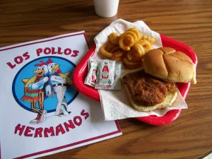
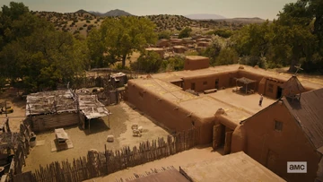
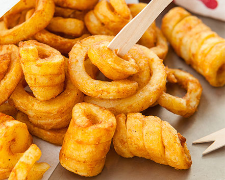

Welcome to Los Pollos Hermanos! Every meal that we give will be Flavourful, Warm, Fresh, and tended with love and care. The finest ingredients are brought together with loving care, then slow cooked to perfection. We only use fresh chicken, herbs, and spices.

In the little village where I was born, life moved at a slower pace, yet felt all the richer for it. There my two uncles were known far and wide for their delicious cooking. People call them Los Pollos Hermanos, the Chicken Brothers. Today we carry on their tradition in a manner that would make my uncles proud. Yes the old ways are still best at Los Pollos Hermanos, but don't take my word for it. One taste, and you will know.

Try our new Curly Fries! A fry with a Southwestern kick. We are so sure that you'll love them, and if you don't, they're on us.
